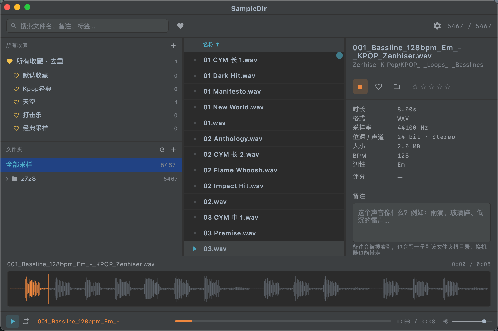

文件夹即库
把任意文件夹加入库，自动递归扫描 WAV / AIFF / MP3 / FLAC，按 BPM、Key 自动识别命名规律。
SampleDir 是一款本地优先的采样素材库管理器。可视化波形、智能试听、 标签与收藏，所有备注和标记都随文件夹一起走——换电脑也不丢。
从扫描到试听，从标记到检索，SampleDir 把零散的采样变成可检索的素材库。
把任意文件夹加入库，自动递归扫描 WAV / AIFF / MP3 / FLAC，按 BPM、Key 自动识别命名规律。
双击任意采样立即播放；↑↓ 方向键连续试听，Enter 从头重播，Space 暂停 / 恢复。
1200 点 RMS 波形精准呈现，点击波形任意位置即可从该处跳播，听段落更顺手。
按文件名、备注、标签关键词秒搜；左侧标签云一键筛选，⌘F 聚焦、Esc 清空。
行首一键收藏，支持命名收藏夹分组；五星评分，优质素材一眼锁定。
选中即写备注、打标签，2 秒自动防抖保存，全部可搜索、可筛选。
备注、标签、评分、收藏写入文件夹内的 .sampledir.json，复制 / 备份 / 换机零丢失。
表头拖拽调顺序、调宽度、显隐列，点击排序；所有布局配置持久化保存。
左侧目录与标签，中间海量采样列表，右侧详情与波形——一切尽在掌握。

无需注册、无需配置，下载即用。
点击左侧 + 或菜单「功能 → 添加文件夹」，选择你的采样目录，SampleDir 自动递归扫描。
双击试听、方向键连续播放；给好素材加星、写备注、打标签，随手整理。
搜索框输入关键词，或点左侧标签 / 收藏夹秒筛；元数据随文件夹永久保存。
支持 Apple Silicon（M 系列）macOS。两种分发方式，按你的习惯选。
当前为 Beta 期，软件完全免费。
⚠️ 软件当前为未签名版本。首次打开若被系统拦截，请在「访达」中
右键 → 打开，或在终端执行 xattr -cr /Applications/SampleDir.app 解除隔离。
产品建议、问题反馈，欢迎邮件联系。